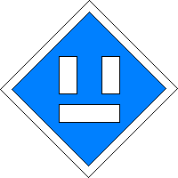
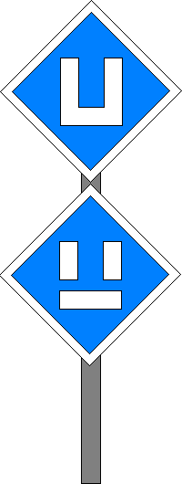

Signalbuch-Online
Signal El 1 – Ausschaltsignal
Informationen und Vorschriften zum Ausschaltsignal im Bahnbetrieb.
(1) Bedeutung
Ausschalten.
(2) Beschreibung
Ein zerlegtes weißes U.

(3)
Am Signal muss das Ausschalten beendet sein.
(4) Signale El 1 und El 2 am gleichen Standort
Das Signal El 1 kann mit einem Signal El 2 am gleichen Standort vereinigt sein; das Signal El 2 befindet sich dann über dem Signal El 1.
In diesem Fall muss das Triebfahrzeug spätestens am Standort des Signals ausgeschaltet sein und darf nach der Vorbeifahrt am Signal und Wiederkehr der Fahrleitungsspannung wieder eingeschaltet werden.
Die am gleichen Standort vereinigten Signale El 1 und El 2 sind bei Dunkelheit beleuchtet.
